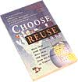
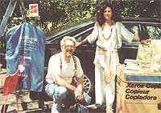

BITS &PIECES
Nikki and David Goldbeck: Can they revolutionize the way of waste?
David and Nikki Goldbeck have been writing books for 25 years. He acts as the editor and advocate while she does research. The couple first reached international acclaim with The Supermarket Handbook (1973; now out of print), which revolutionized the way America looked at health food and sold over 850,000 copies. Several books and several years later, they are attempting to renovate the way people consume and conserve. Their encyclopedia Choose to Reuse (Ceres Press, 1995) has been on the market for one year and to date has only sold 7,000 copies (100 were sold last year to Chevy Chase and his wife as Christmas presents for friends), significantly and surprisingly less popular than their first book.
Considering the recycling upsurge in the last several years, one would expect another of the three "R's" to become trendy and popular. Not so. Is revolutionizing diet easier than changing the way people spend money? David Goldbeck seems to think there is something bigger than a lack of excitement undermining reuse's popularity: "Despite the fact that people reuse all the time, they think it is second class and don't fully understand what reuse is about. Reuse is viewed as subversive as a concept, and the argument has been made that it is anti-capitalist despite the fact that some multimillion dollar corporations reuse. In fact, reuse is the ethical side of capitalism. Many businesses are based on reusing, such as car rentals, furniture stores, and libraries. Nonetheless there is an enormous resistance to it."
Despite this, the Goldbecks have no intention of throwing in the towel. David Goldbeck claims he spends 20 to 30 percent of his time working with reuse-promoting the book, working on design and reuse projects, and giving seminars at businesses, always with his traveling reuse museum in tow. Besides their legwork, there are greater factors to making any social change become the norm. According to Goldbeck, "Any new trend must go through a socialization process. The way a social movement happens in America is by developing a style around something. With recycling, there are stickers, bins, and logos, and it has become a big trend. Reuse has not become a style yet. People do not say `I am a reuser' like they say `I am a recycler.' All I am trying to do is to say to people that with all the decisions they make (in everyday life), they should think about whether reuse has an application in their daily activity, and factor it into their thinking process.
What is Reuse? · Maintenance · Repair · Durability · Rental · Resale · Restoration · Refilling · Refurbishing
|
 |
 |
|